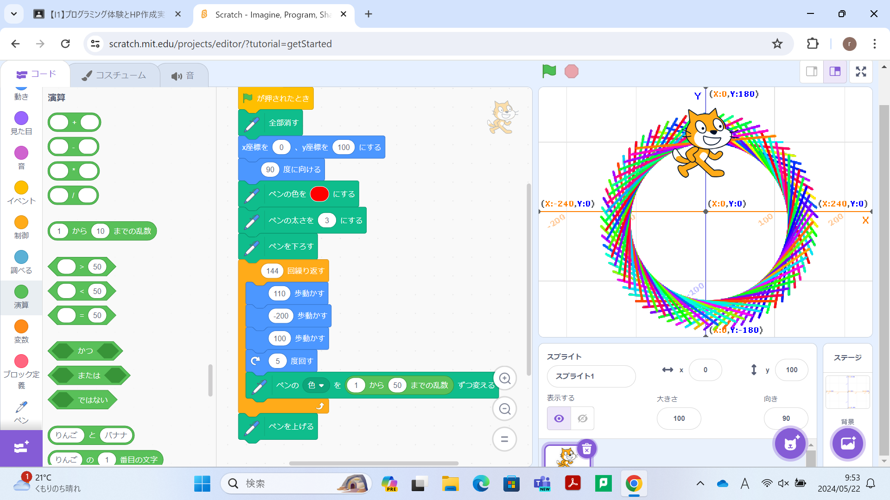

1-1 サイエンスアート

1.内容
スクラッチを使って線を書くプログラムを作りました。このプログラムはペンの色が変わる数を1から50の乱数にすることで毎回毎回違う色で線を書くことができます。そして、5度回転するのを144回くりかえしてちょうど二週するようにもなっています。
2.感想
スクラッチのペンの機能を使ってプログラミングをしたり何かを書いたりすることを久しぶりにして、線の色や回る角度、線の長さなどいろんなことを考えつつ比較的簡単なプログラムで作ることができる良い機能だなと改めて感じました。